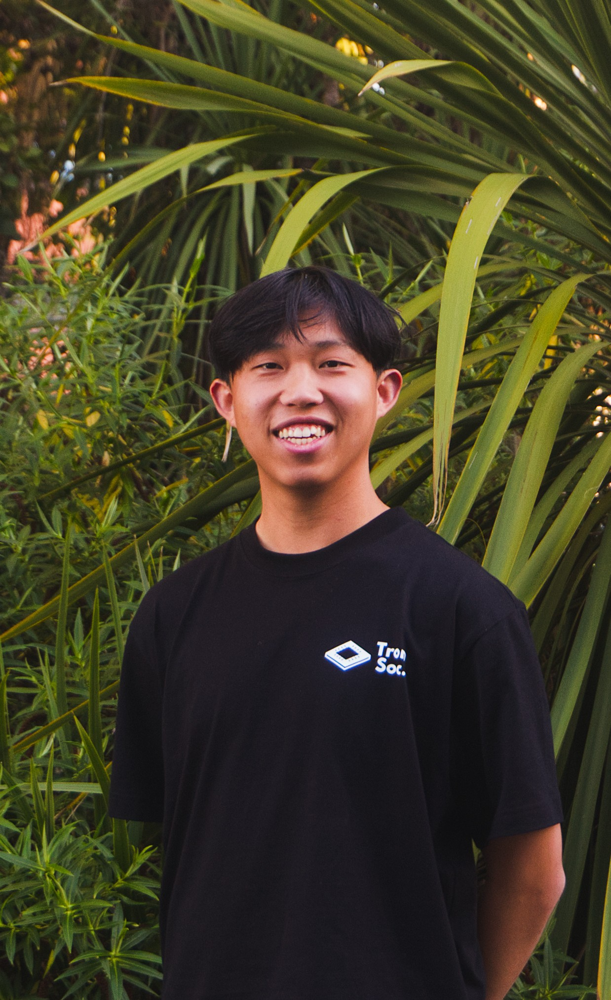
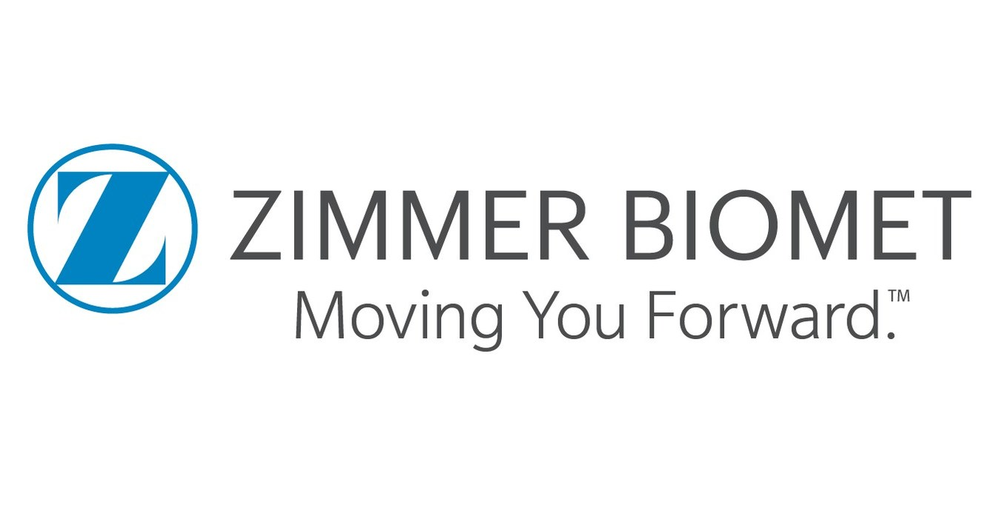
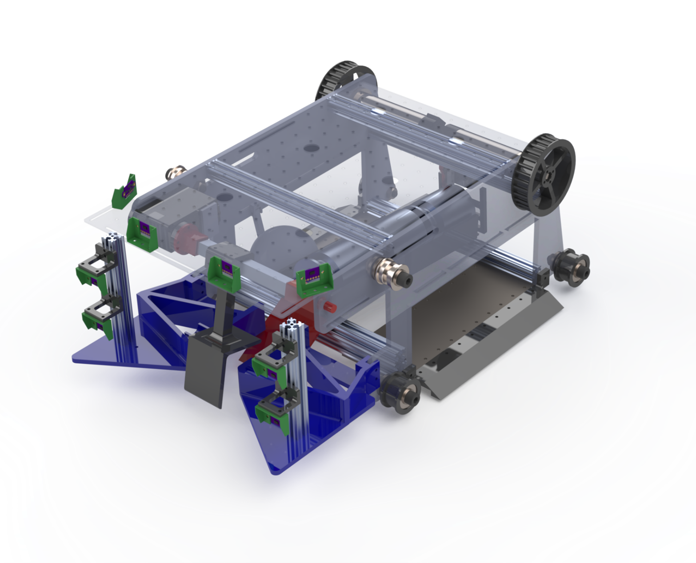
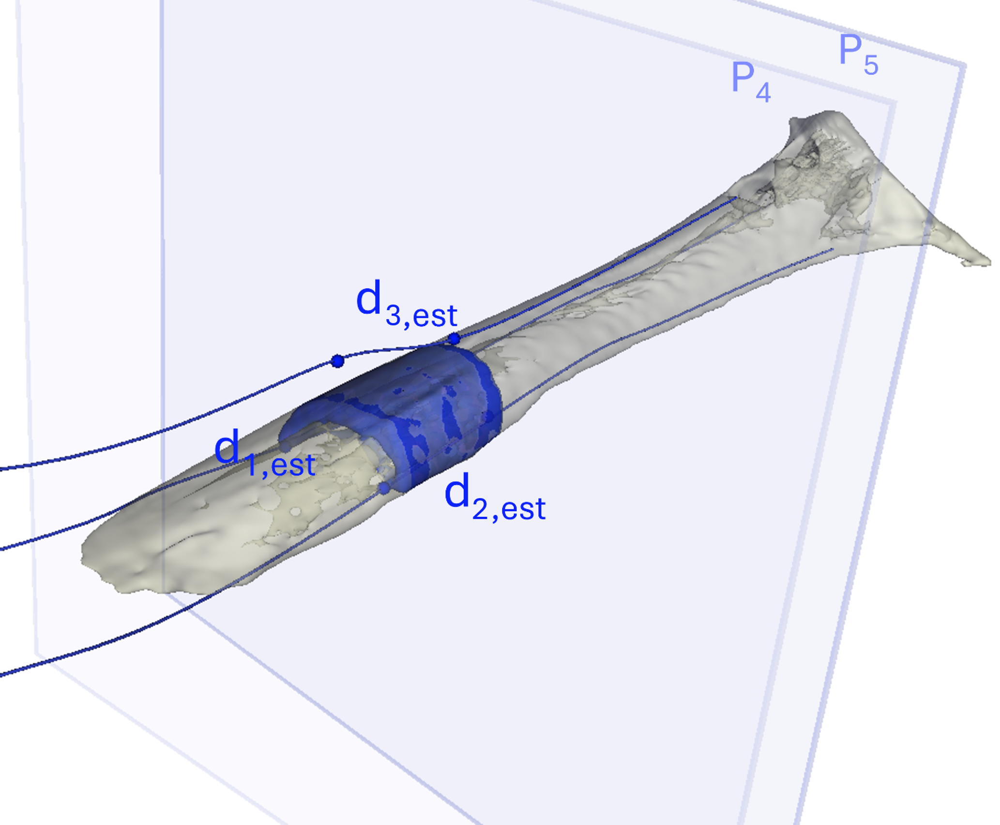
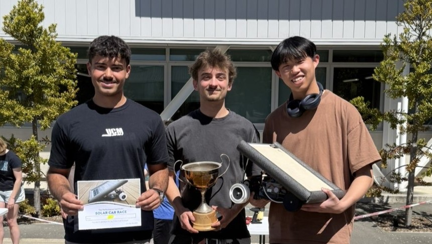
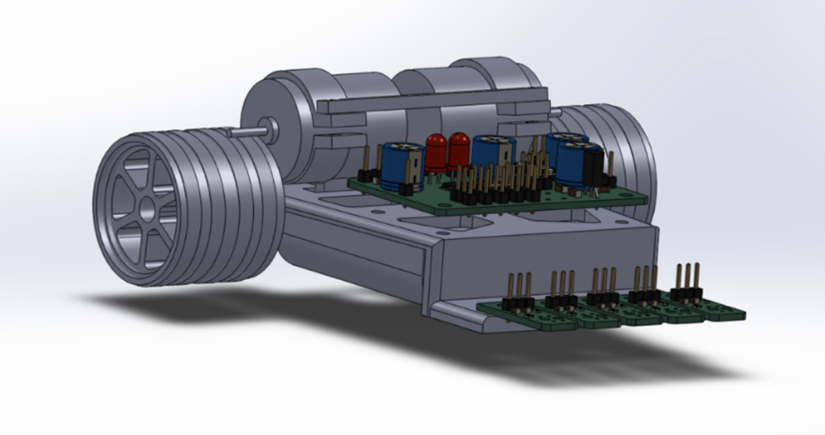
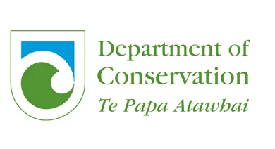
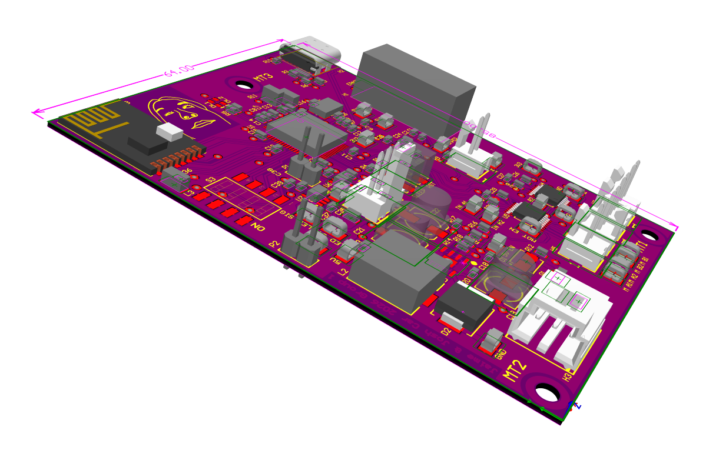
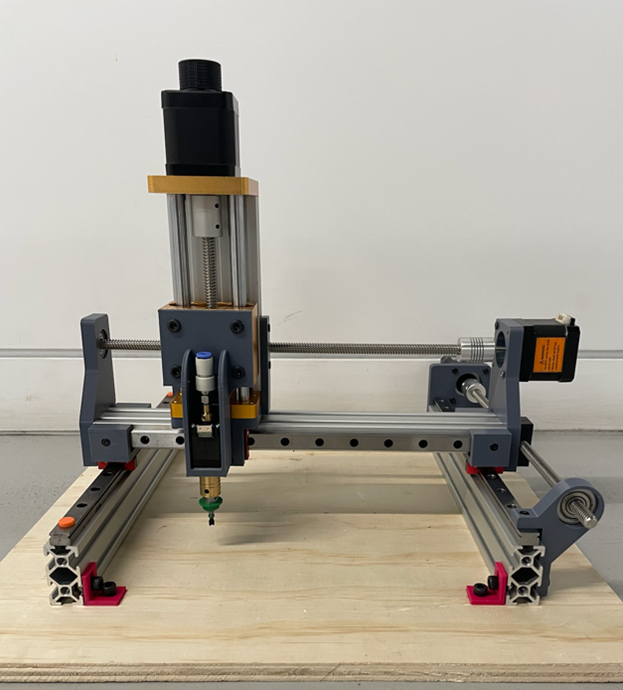

Portfolio
Assistant Analyst @ Forsyth Barr | Ex Zimmer Biomet
Final Year Mechatronics Engineering @ The University of Canterbury

I'm a final-year Mechatronics Engineering student at the University of Canterbury with a passion for impactful industries. My two guiding principles are effect meaningful change and be part of bigger things.Most recently, I've worked in medtech, a space where excellence directly improves people's lives. I've worked across orthopaedic implant design at Zimmer Biomet, cancer research at the University of Otago, and equity markets at Forsyth Barr, bringing the same motivation to every environment: the need to make a tangible impact.
Outside of engineering, I lead student organisations, run ultramarathons for charity, and coordinate disaster relief efforts. I'm at my best in fast-moving environments where I can see the direct impact of my work.
Zimmer Biomet — Ossis Custom Hip Division
University of Otago, Christchurch
Forsyth Barr Investment Bank
Click any card to see full details, photos, and links.

Zimmer Biomet — Ossis
Developed design tools now integrated into all custom hip implant workflows at a Fortune 500 medical device company.

University of Canterbury
Led a team to design and build a fully autonomous robot — one of the highest collection and return-to-base rates in the competition.

University of Otago
Novel method (M3) for tumour margin assessment achieving 0.02 mm mean error. Manuscript submitted for journal publication.

University of Canterbury
High-efficiency closed-loop buck converter — fastest switching time (34 ns) and highest efficiency in the cohort. Won the race.

University of Canterbury
High-speed autonomous robot with custom dual-PCB and hybrid PID/Bang-Bang control. Best time: 15.31s.

DOC Conservation Challenge
Remotely triggered conservation gate for capturing endangered Takahē. Equal national winner. Full BOM under $500.
Fisher & Paykel Healthcare — Honours Project
Designing and testing an automated medical device reprocessing system to reduce manual labour and improve workflow consistency.

University of Canterbury
Designed and programmed the racer board for a head-controlled RC car, integrating PCB design, embedded software, radio communication, and motor control.

Personal Project
Compact hobbyist pick-and-place with 196mm × 196mm working area. Total build cost: $208.92. Full assembly in 50 minutes.
Bachelor of Engineering with Honours
Mechatronics Engineering
Cambridge A Levels
Physics · Business · Economics
Click any card to see contributions and highlights.
President
View →Treasurer
View →Marketing Manager
View →